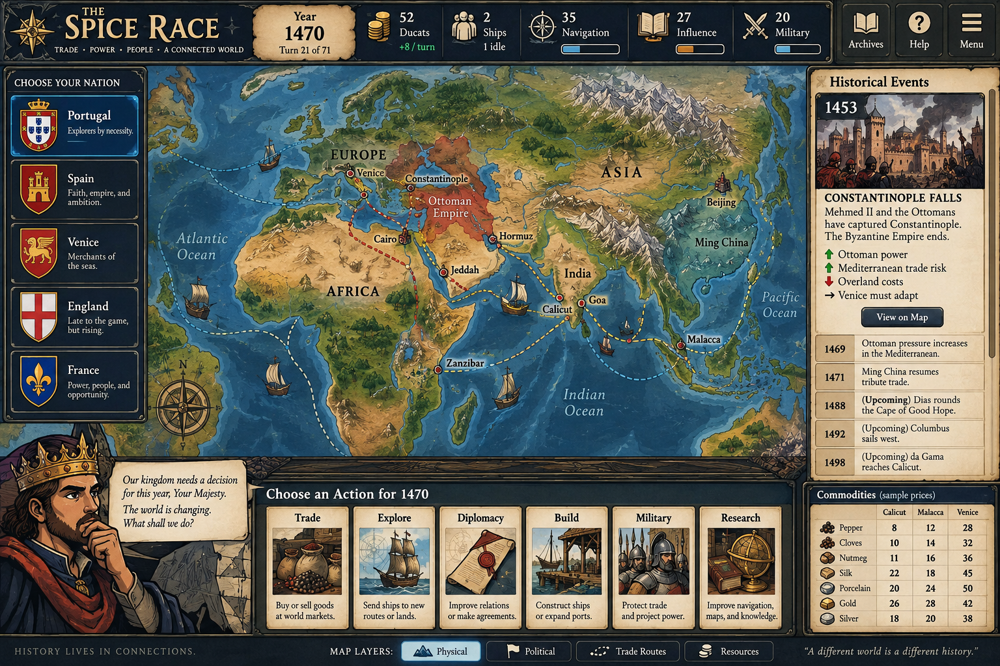

HISTORICAL INTEGRITY MODE: established events follow the historical record. Your decisions change your nation's strategy and create labeled counterfactual outcomes; they do not rewrite unrelated world events.
CAMPAIGN I — ESSENTIAL QUESTION How did European demand for Asian goods help produce maritime exploration and eventually colonial expansion?
CAUSE & EFFECT TRACKER
European recovery→Luxury demand→Costly Asian trade

Click a port to inspect its market, political context, and connections.
👑
Your Majesty, Europe wants the luxuries of Asia. Our merchants can buy through established networks—or we can gamble on finding greater access. Discuss with your partner before acting.